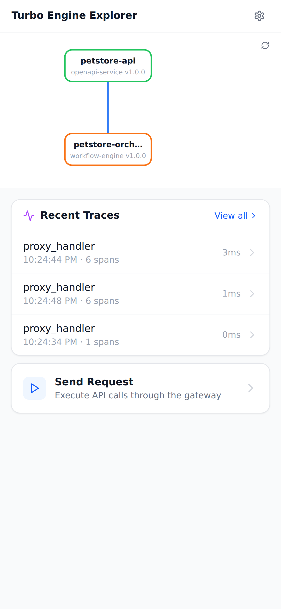

ALL 14 TESTS PASSED — petstore-basic
Petstore API with RPC-to-REST orchestrator. Validates the full request chain: gateway → orchestrator → upstream API, including trace propagation.
Total: 38.5s · 14 tests · 4 screenshots · 0 K8s events
+0.0s
publish(31ms)PASS
POST /v1/packages 201 (28ms)
publish-petstore-apiPublished petstore-api@1.0.0 (HTTP 201) (28ms)
POST /v1/packages 201 (3ms)
publish-petstore-orchestratorPublished petstore-orchestrator@1.0.0 (HTTP 201) (3ms)
+0.0s
environment(4ms)PASS
POST /v1/environments 201 (4ms)
create-environmentCreated 4e803023934523a366aad7716690351a (4ms)
+0.0s
build(6ms)PASS
POST /v1/builds 201 (3ms)
trigger-buildBuild bld-1771712668917-1 triggered (3ms)
Build poll #1: succeeded
build-statusBuild bld-1771712668917-1 succeeded (3ms)
+0.0s
reconcile(5.1s)PASS
POST /v1/reconcile 200 (59ms)
Waiting 5s for operator to settle...
INFO petstore-api: petstore mock starting
INFO petstore-orchestrator: orchestrator starting
+5.1s
operator-reconcileReconciled 2 components (59ms)
+5.1s
k8s-resources(266ms)PASS
Found: deployment/deploy-petstore-api
Found: service/svc-petstore-api
Found: configmap/cm-petstore-api
Found: deployment/deploy-petstore-orchestrator
Found: service/svc-petstore-orchestrator
Found: configmap/cm-petstore-orchestrator
verify-k8s-resourcesAll 6 resources created (266ms)
+5.4s
pods(293ms)PASS
Waiting for deploy-petstore-api...
deploy-petstore-api available
Waiting for deploy-petstore-orchestrator...
deploy-petstore-orchestrator available
pods-runningAll pods running (293ms)
+5.7s
gateway(10.0s)PASS
POST /api/pets/rpc/listPets 404
Route not ready (attempt 1, HTTP 404), retrying...
+10.7s
POST /api/pets/rpc/listPets 404
Route not ready (attempt 2, HTTP 404), retrying...
+15.7s
INFO petstore-orchestrator: upstream call start
POST /api/pets/rpc/listPets 200
gateway-routingGateway route /api/pets/rpc/listPets active (HTTP 200) (10015ms)
+15.7s
requests(4.0s)PASS
+17.7s
GET /pets 200 (2005ms)
list-pets-directHTTP 200; pets has 3 items (>= 1) (2005ms)
+19.7s
INFO petstore-orchestrator: upstream call start
POST /rpc/listPets 200 (2005ms)
orchestrator-directHTTP 200; rpc=listPets; upstream_status=200 (2005ms)
INFO petstore-orchestrator: upstream call start
POST /api/pets/rpc/listPets 200 (4ms)
e2e-list-petsHTTP 200; rpc=listPets; upstream_status=200; result.pets has 3 items (>= 1) (4ms)
INFO petstore-orchestrator: upstream call start
POST /api/pets/rpc/getPet?id=2 200 (4ms)
e2e-get-petHTTP 200; result.pet.name=Whiskers (4ms)
INFO petstore-orchestrator: upstream call start
POST /api/pets/rpc/listPets 200 (3ms)
trace-propagationHTTP 200; trace_id=a0b1c2d3e4f5a6b7c8d9e0f1a2b3c4d5 (3ms)
+19.7s
screenshots(18.6s)
+25.7s
Console packages list after publishing petstore components

+29.8s
Environments list showing the petstore-e2e environment

+34.0s
Console dashboard overview

+38.3s
Explorer mobile UI showing deployed services and traces

+38.3s
logs(227ms)
Captured petstore-api logs (13 lines)
Captured petstore-orchestrator logs (21 lines)
Component Logs
petstore-api (13 lines)
22:24:29.481 INFO petstore mock starting
22:24:44.553 INFO request received
22:24:44.553 INFO response sent
22:24:46.559 INFO request received
22:24:46.559 INFO response sent
22:24:48.563 INFO request received
22:24:48.563 INFO response sent
22:24:48.567 INFO request received
22:24:48.567 INFO response sent
22:24:48.571 INFO request received
22:24:48.571 INFO response sent
22:24:48.575 INFO request received
22:24:48.575 INFO response sent
petstore-orchestrator (21 lines)
22:24:29.521 INFO orchestrator starting
22:24:44.552 INFO request received
22:24:44.552 INFO upstream call start
22:24:44.553 INFO upstream call complete
22:24:44.554 INFO response sent
22:24:48.563 INFO request received
22:24:48.563 INFO upstream call start
22:24:48.563 INFO upstream call complete
22:24:48.563 INFO response sent
22:24:48.567 INFO request received
22:24:48.567 INFO upstream call start
22:24:48.567 INFO upstream call complete
22:24:48.567 INFO response sent
22:24:48.571 INFO request received
22:24:48.571 INFO upstream call start
22:24:48.571 INFO upstream call complete
22:24:48.571 INFO response sent
22:24:48.575 INFO request received
22:24:48.575 INFO upstream call start
22:24:48.575 INFO upstream call complete
22:24:48.575 INFO response sent